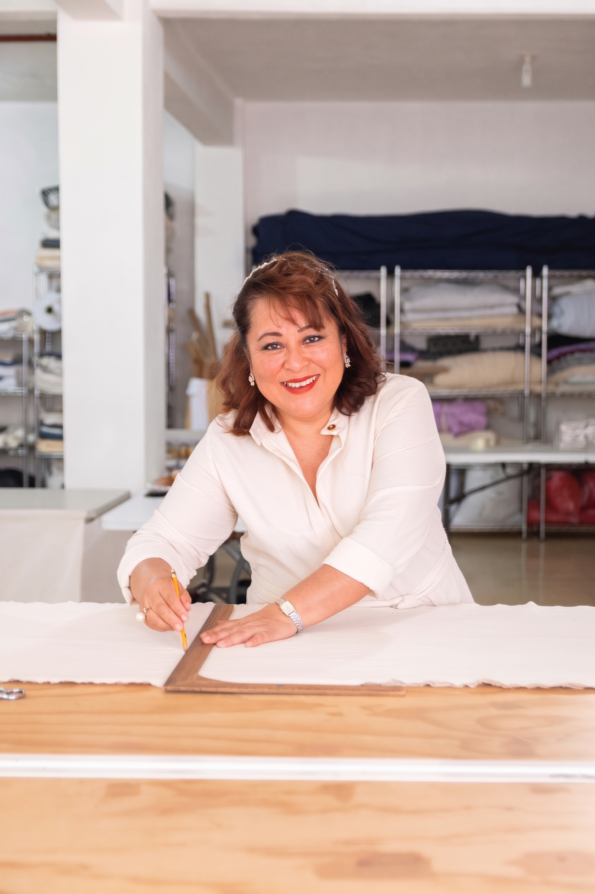

Prendas y piezas hechas con amor, a la medida de cada idea.
Soy Antonia. Diseño, patrono y confecciono para marcas, eventos y personas que quieren algo hecho con cuidado.

Trabajos para clientes
Piezas hechas para clientes. Toca cualquiera para ver el detalle y qué parte hizo Antonia.
Bolsa convertible
$400 MXNTote amplia de lona natural que se enrolla y abrocha para volverse bolsa compacta con asa. Bolsillo frontal con solapa de tela estampada y un dije pintado a mano.
¿Tienes algo en mente?
Una prenda, un uniforme, una colección. Cuéntamelo.

Hecho con amor, puntada por puntada.
[Cómo empezó Antonia en la costura, dónde aprendió y qué la mueve. Dos o tres frases en su propia voz.]
[Qué tipo de trabajos disfruta más y qué la distingue: detalle, telas mexicanas, piezas que duran.]
Ver su trabajoDiseño
De una idea o una referencia a un diseño listo para coser.
Patronaje y confección
Piezas únicas o producción en pequeñas cantidades.
Detalles y ajustes
Bordados, acabados y arreglos que hacen la diferencia.
Platiquemos.

WhatsApp se abre con el mensaje listo; puedes editarlo antes de enviar.